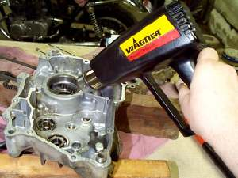
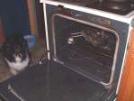
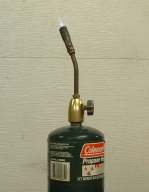
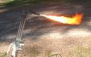

HOT & COLD
¶ Metal is not as hard as it looks or feels. It is always moving. As the temperature goes up metal expands. As the temperature goes down it shrinks. This has advantages and disadvantages. The disadvantage? This changing of size can loosen nuts and bolts. The advantage? It can help us take things apart. An example would be wheel bearings. Most are in an aluminum hub. aluminum expands a lot when heated. So just break out the torch and have at it .. right?
No!
You want to start with gentle heat and if necessary go up from there. I use a Hot Air Gun. Hair driers don't put out enough heat and a boiling water soaked towel... well, not me. You want to heat the entire object. IF you heat only one part of it whatever it is you are heating can warp out of shape... not good... so move the gun around to evenly heat it.
 There seems to be a "magic" temperature(around 250 to 275 degrees). If you moisten your finger and lightly touch it to the hot part you will feel the moisture boil! Yes I really do this, and it does not burn me because I do it very fast! It can burn you. If you want, try dropping a little drop of water on the part and if it boils off your there. If you have access to a regular baking oven you can slowly and accurately raise a part's temperature to 250 degrees very easily. At this temperature bearings will sometimes fall out of crankcases all by themselves or with just a little help. Not only that, the new bearing will usually drop right in if it's been in a freezer for an hour or so. Do it when no one is home. Just make sure you give the dog a treat so he dosen't rat you out to your wife, girl friend, or mother.
Notice I use words like "usually" and "might" and "probably" and the like. that is because this level of heat almost always works... almost but not always.
Sometimes you have to go to the next level of heat. This would be a propane torch. Very gross but sometimes you have to use it. Remember if you get a part too hot you can take the temper
out of the steel making it too soft... Not good. Speaking of tempering, if you heat a solid copper head gasket red hot and then quickly quench it in water it will retemper it good as new. Won't work on steel head gaskets.
Lastly comes the oxy/acetylene torch. The bad boy. The "Hot Wrench". It will take the part off, and you needed a new one anyway. Long and short of it, use a hot air gun and your freezer.
If it fits inside something shrink it in the freezer for a few hours. If it goes on the outside of something, heat it up with the heat gun and work quickly.
Hot and Cold can work for us in other areas too.
- It is best to change your oil when it is HOT, or at least warm, from running and everything is mixed up.
- Lube your rear chain when you return from a ride and the chain is HOT, so the oil will penetrate better.
- If your engine is water cooled, check the coolant level in the overflow reservoir when it is HOT.
- To get the most accurate reading, run your compression tests when the engine is HOT, but I never do. I mean really... IT'S HOT!
- To get an accurate reading, check your tire pressures when the tire is COLD. Air expands when it is hot from running.
- Only remove the Radiator Cap when it is COLD, so you do not get sprayed with boiling water. A good thing that.
- Check Valve Clearances when the engine is COLD. Remember, metal expands when it is hot.

Copyright © 1999-2016 dansmc.com. All rights reserved.